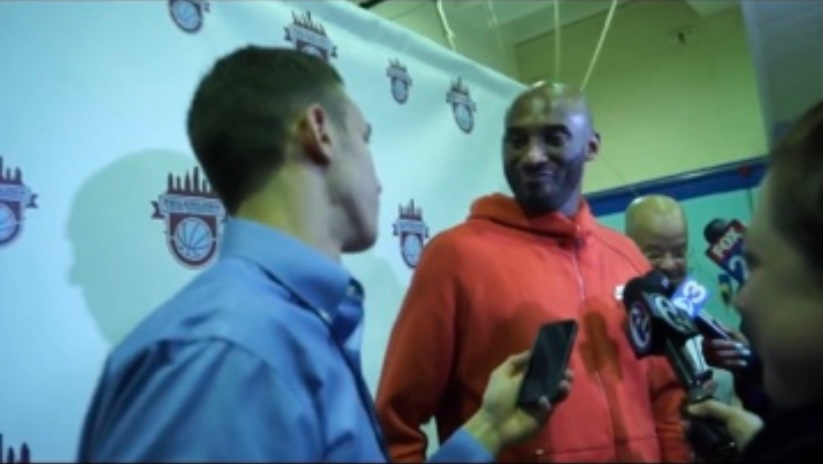

I am a sports journalist at the University of Maryland Phillip Merrill College of Journalism. I cover football and men’s basketball as the deputy editor for Tesutdo Times. I also work as a broadcaster and podcaster for WMUC Sports, the student-run radio station on campus.
Deputy Editor
Testudo Times
October 2019- Present
I am a writer and reporter for this student-run sports publication at the University of Maryland. I write news stories and analysis pieces about all University of Maryland sports. Most recently, I am contributing film breakdown stories as part of the Men’s basketball coverage. I have also recently been assigned the beat reporter for the baseball team this spring.
Writer and Podcast host
WMUC Sports
September 2020- Present
I am the women’s basketball beat reporter for WMUC Sports. I contribute preview stories, game stories and feature pieces. I also co-host a podcast titled “Collegiate Chaos,” where we touch on all of the news in College Sports.
Intern
Montgomery County Sports Hall of Fame
May 2021-August 2021
My responsibilities as an intern for this hall of fame included running the social media accounts, creating graphics, researching the nominees and reaching out to their families, along with writing stories that were published on its website.
Writer
Section215
June 2020-July 2021
I am a blogger for this Philadelphia based FanSided website. I offer my insight and opinion in the form of blogs on the Philadelphia 76ers and the Philadelphia Eagles.
Intern
Athletes Ink
May 2019-July 2020
I served as an intern for this athlete media relations company. I conducted interviews with athletes and coaches, researched and wrote stories for this organization. I also traveled to Nashville for the 2019 NFL draft for this internship.
Bachelor of Arts in Journalism, University of Maryland, Philip Merrill College of Journalism, Expected Spring 2023
The Presidential Scholarship, 4-year merit award
The Philip Merrill College of Journalism Dean’s Scholarship, 2019
Proficient in Microsoft Office Suite (Word, Excel, PowerPoint).
Video Editing, Podcasting, and social media sites (Instagram, Twitter, Facebook, Linkedin).
Strong communication, interviewing and writing skills.
